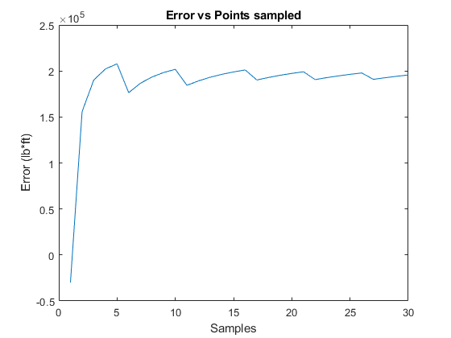

Contents
Setup inital variables
w = 2001;
L = 27.25;
N = 30;
Error = zeros(1,N);
for P = 1:N
F = discretize_load(P,L,w);
Error(P) = moment_error(F,L,w);
end
Results
[a,b] = wall_reactions(F);
plot(Error);
title('Error vs Points sampled');
xlabel('Samples');
ylabel('Error (lb*ft)');

Functions
function [outputArg1] = discretize_load(points,length, W)
x = linspace(0,length,(points+1));
dx = length/(points);
x = x(1:points);
F=W*dx*(1-(x./length));
dis = ones((points),2);
temp = linspace(0,points-1, points);
dis(:,2) = dis(:,2).*dx.*(temp');
dis(:,1) = F;
outputArg1 = dis;
end
function [outputArg1,outputArg2] = wall_reactions(input)
Fsum = sum(input(:,1));
outputArg1 = Fsum;
outputArg2 = sum((input(:,1).*input(:,2)));
end
function [outputArg1] = moment_error(F, L, W)
X = 3*L/16;
Logic = F(:,2)>= X;
F1 = F(Logic,1);
X1 = F(Logic,2);
M1 = sum(F1.*X1);
Ma = (W)*((L*X)-((X^2)/(2*L))-((1/6)*(L^2)));
outputArg1 = M1 - Ma;
end